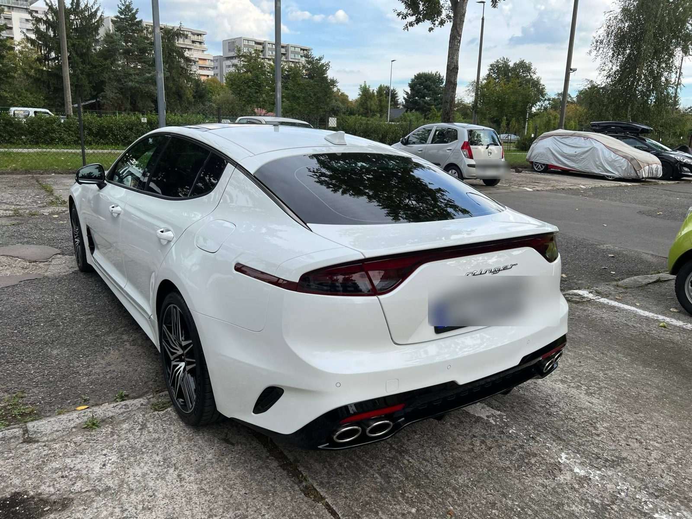

01 — Historia
Kupiłem je białe.
Zostawiłem coś więcej.
Stinger od pierwszego dnia nie był dla mnie „samochodem do przemieszczania się”. To był projekt. Odebrany prosto z salonu, w perłowej bieli, z czerwoną nappą w środku i panoramicznym dachem — wyglądał świetnie. Ale czułem, że stać go na więcej charakteru.
Stąd decyzja o oklejeniu na matową, przechodzącą w gradiencie folię czerwono-czarną. Efekt? Samochód, który na parkingu robi się głośny, mimo że silnik akurat milczy. To nie jest „naprawiony wypadek” ani „tuning na szybko” — to przemyślana metamorfoza auta, które i tak miało już wszystko, czego potrzeba.
„Kupując Stingera nie szukałem kolejnego SUV-a. Szukałem auta, które ma charakter zanim jeszcze ruszy z miejsca.”

Białe → Folia